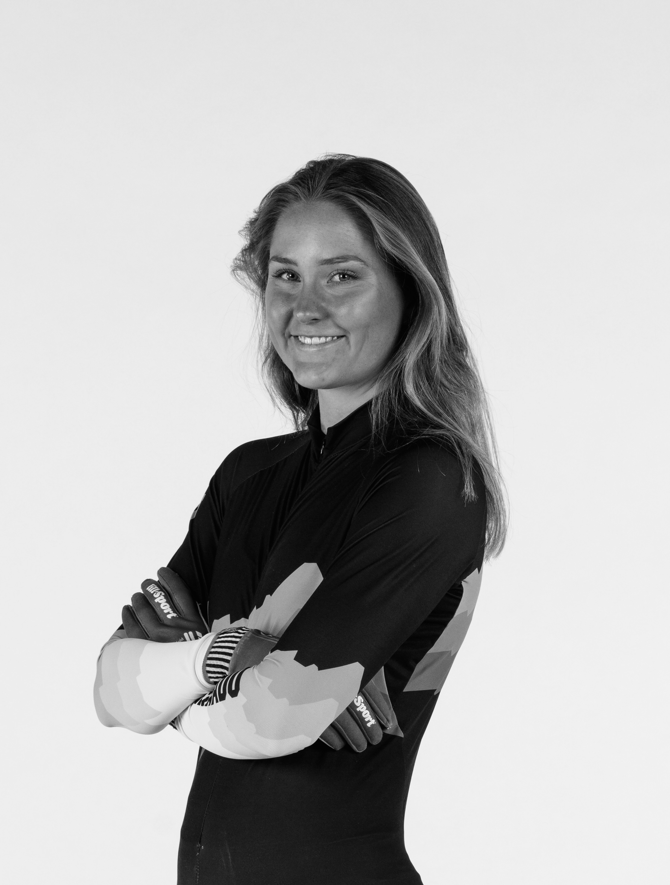

Hi, I am Tilde.

This site is a space to get to know me and follow my journey as a student-athlete and economist. It brings together my experiences in sport, academics, and creative work, and how each of them shapes the way I think, learn, and grow.